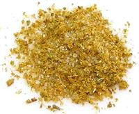

 |
Mchuzi MixEast Africa (Kenya) | ||||
| Makes: Effort: Sched: DoAhead: |
4 oz * 15 min Yes |
This is a reverse engineered equivalent of the very popular Kenyan Royco® Mchuzi Mix. Royco is practically as universal in Kenya as Maggi® Cubes are in Nigeria. This recipe fills a 4 oz spice jar. | |||
|
1 ----- 1 1 1 1 ----- 1 1 1 1 1 |
T --- T T T T --- T T T T T |
Beef Bouillon Powder (1) -- Grind Coriander Seeds Cumin Seeds Fennel Seeds Cinnamon -- Powdered Turmeric Garlic Powder Ginger Powder Sugar Salt |
Royco® is also made in a Chicken version (just substitute Chicken Powder for the Beef Powder). For a Vegetarian version, just omit the Beef Bouillon Powder, perhaps add some Vegeta. Make - (15 min)
|